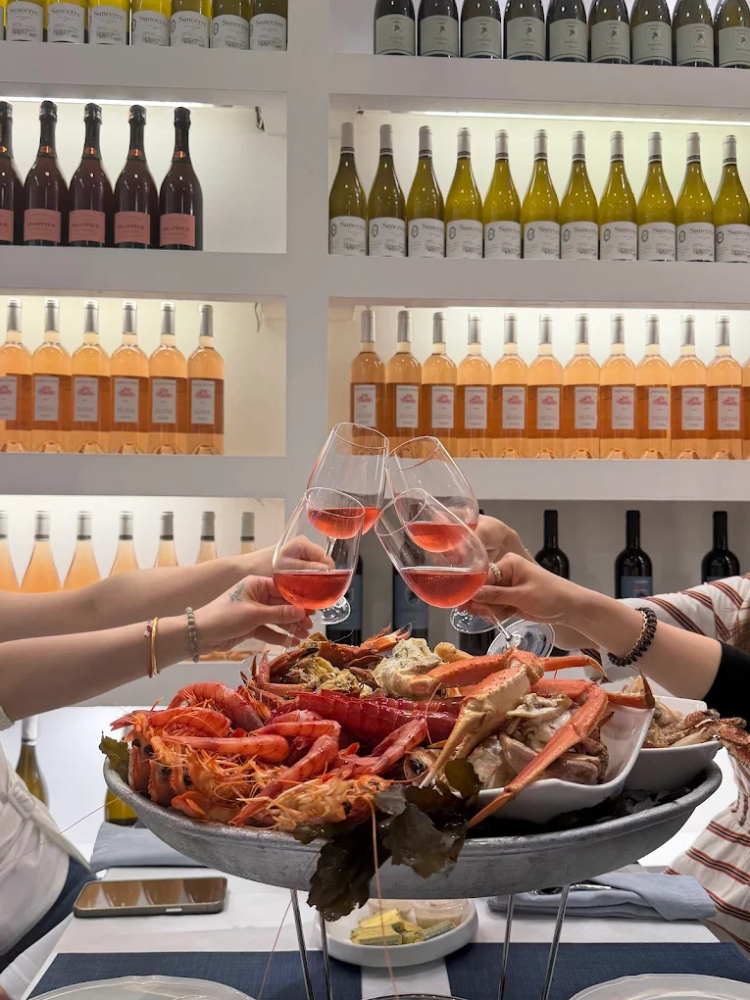

Brittany
in Turin
Simini was born from Michel's passion — a true Breton — for raw seafood and the French maritime tradition. In a small, elegant restaurant on Corso Racconigi, all white and blue with portholes instead of windows, he brought the authentic Breton brasserie de la mer to Turin.
Michel personally selects the finest oysters directly from Breton producers, guaranteeing a freshness impossible to find elsewhere in the city. Belons, Fine Claires, seasonal varieties: a new discovery every week.
«Our go-to spot whenever we crave oysters and coquillages without having to travel all the way to France.» — Google
Marinière style,
understated elegance
The restaurant is small, intimate, carefully decorated in every detail: white and blue everywhere, portholes that evoke Breton boats, tables close together for a warm and convivial atmosphere. This is not a place to eat in a hurry — it's a place to savour the sea, even in Turin.
Perfect for romantic dinners, anniversaries, or simply for those who love great seafood and want to spend a special evening. Seating is limited: reservation strongly recommended.
«The only place in Turin offering raw seafood at this level. I've visited many, and I'd say it's among the best in Italy.» — Google

Only the best,
only the freshest
«The best Plateau Royal in Turin — only the freshest ingredients. A special place, a must for anyone who loves quality seafood.» — Google Review, 5 stars
Gluten-free
Gluten-free options available. Please inform staff when booking.
Payments
All major credit cards and debit cards accepted.
Reservation
Limited seating — reservation strongly recommended, especially on weekends.
Seasonality
Simini closes out of oyster season. Follow us for opening updates.